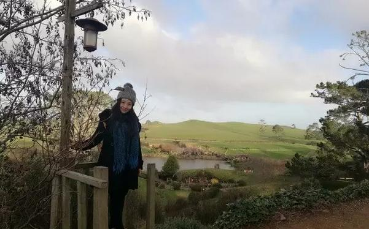

每日一篇——志愿者风采/ 最好的时节遇见你 新西兰【上 自然 人文篇】
 587
587
来源：原创 作者：朱格
时间过得飞快，转眼我已经在这个牛羊成群的长白云之乡度过了近一年的时间。
从初到新西兰的惶惑懵懂，到如今可以对新来的志愿者侃侃而谈的“老油条”；从初进课堂的结结巴巴到如今慢慢开始对熊孩子也能应付自如；从在staff room里时的无所适从到现在和同事们自在地分享自己的假期和生活中的趣事；从每次进城都要靠GPS还找不清方向到对现在哪里有好吃的了如指掌……才发现原来我不知不觉地经历了这么多，也渐渐意识到了我对这个充满童话气息的土地日渐深沉的爱。
【自然篇】
在形容新西兰这个国家的时候，高晓松说的一段话让我觉得一语中的：“欧洲那些尚武的、横枪跃马的人去了美国，那些想有人抬着骑大象、想当老爷的人去了印度，那什么人去了新西兰呢？——我也不要和人去拼命，也不想作威作福，我就是打算去放羊的人。于是欧洲那些最为纯朴、最愿意吃苦耐劳的人远渡重洋，来到了新西兰，和当地的毛利人达成了平等协议，成了几个世纪前的第一批移民。”
所以，正如这段话中所说，这里就像是电影里的霍比特人一样，简单快乐，热情友善。新西兰被誉为“世界上最后的一块净土”，不光是因为这里的天蓝云低，不光是清澈空气带来的阵阵香气，不光是黄昏时随时可见的艳丽晚霞，也不光是每夜抬头可见的璀璨银河……这里更吸引人的是它更原始的美好：未被砍伐的原始树林，没被污染的海洋湖泊，人与自然相互尊重友好相处的和谐生态。
在我看来，新西兰就如同梦一般，你所想象不到的，你所难以置信的，在这里都可能成为现实。在这里，你可以听见自然的心跳，可以平息内心的喧嚣，最美的风景永远在路上。
【人文篇】
新西兰是上帝特意打造的童话世界，我们需要不时地感叹大自然的鬼斧神工，更发自内心地感谢这天堂一般的馈赠。然而比起自然，也许人与人的交往，是让我更爱这片土地的原因。
我的住家是一对从英国移民过来的夫妻，有一对可爱的儿女。夫妻俩都是中学教师，妈妈性格直爽，细心体贴，爸爸绅士稳重，乐于助人，简直构成了我心目中完美家庭的真实景象。完全陌生的环境，无数脸盲的面孔，吃力难懂的Kiwi口音，相距遥远的亲朋好友……
初到这里，内心的各种慌张一个接一个扑面而来，让我瞬间措手不及。但是，住家的关心和爱护让我渐渐地适应周围的一切：住家爸爸会每天问候我在学校的生活，住家妈妈会问我喜欢吃什么，更会时不时地关心我在中国的家人，住家妹妹会放学后每天去教室找我一起回家，住家弟弟还会教我流行的游戏……关于这个家庭，其实还有太多太多的故事，他们对我的关心与爱护，就像一股清泉，让我的心也慢慢地舒缓和温暖起来。
在家门口堆雪人
哥伦巴中学是南岛最早开设的五所孔子课堂之一，从无到有，这里的中文老师丁轶撑起了哥伦巴中文课堂的一片天。丁老师在哥伦巴中学已经工作了将近九年，中文资源室里满满当当几书架的教学资源便是迄今为止丁老师中文教学的心血。
她会时不时给我准备地道的中国菜给我当午饭，会在周末时带着家人和我一起出去逛早市，会邀请我经常去家里坐坐，会和我分享生活中的趣事和囧事，会在我生日时亲自制作贺卡和礼物；她也会耐心地和我分享汉语教学的方法和游戏，会在我教学时适当地提醒我注意每部分的时间，会告诉我该怎么在学生面前树立自己作为老师的威信，会给我介绍学校其他的员工，也会在我马虎大意犯错时告诉我下次注意。
每天的朝夕相处，耐心的帮助鼓励，我感受到了自己的成长和进步，也渐渐地从内心完成了从学生到老师的真正转变。从丁老师身上，我学到了很多，不仅仅是怎么当一个好老师，还有怎么当一个好妈妈，好女儿。她是我的老师，也是我的朋友，我的亲人，让我在异国他乡的这一年里多了一丝家乡的温暖。
和学校的学生一起去滑雪
有句话说，身体和灵魂，总有一个在路上。
旅途中的经历也让我无比难忘，第一次晚上九点搭便车，第一次和陌生人徒步八小时，第一次骑无数次让人记忆深刻的山地自行车，第一次和经过的每个行人问好，第一次去天主教养老院和修女奶奶们一起传播爱心……这些体验不断在我脑海里回放，一年的时间，感恩在旅途中曾给过我温暖和帮助的人，给过我震撼和感动的事。故事还有很多很多，太多的温暖只言片语难以说尽，我相信一切都是最好的安排。
作者简介：
朱格，华中科技大学外国语学院研究生，2016年1月至2016年12月担任新西兰坎特伯雷大学孔子学院汉语教师志愿者，任教于但尼丁哥伦巴中学。

【下/ 教学篇 链接：http://wz.chinesecio.com/?p=13175】